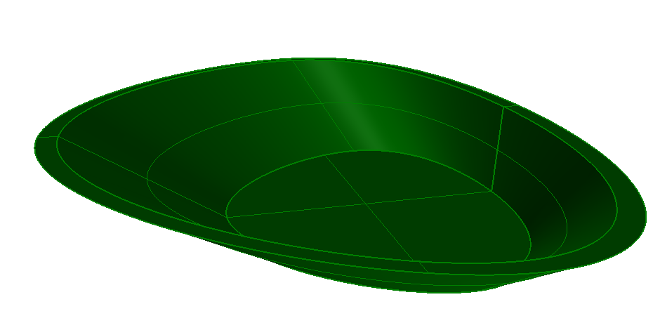

Annex E
(informative)
Examples
E.1.1 - Basin Advanced Brep
Example overview
The examples demonstrate the use of various geometric shape representation types to express a simple geometric form of an element. The examples of advanced geometric shape deal with CSG having Boolean operations, advanced swept solid and advanced brep representations. in some cases, the same geometry is also provided as faceted brep or tessellation to compare the results.
The advanced brep representation using NURBS is shown in Figure A. It shows a basin as a sanitary terminal.

IFC-SPF source
ISO-10303-21;
HEADER;
FILE_DESCRIPTION(('ViewDefinition [NotAssigned]'),'2;1');
FILE_NAME(
/* name */ 'basin-advanced-brep.ifc',
/* time_stamp */ '2016-02-04T08:47:55',
/* author */ ('redacted'),
/* organization */ ('redacted'),
/* preprocessor_version */ 'redacted',
/* originating_system */ 'redacted - redacted - 3.14159',
/* authorization */ 'None');
FILE_SCHEMA (('IFC4X4'));
ENDSEC;
DATA;
/* general entities required for all IFC data sets, defining the context for the exchange */
#1= IFCGEOMETRICREPRESENTATIONCONTEXT($,'Model',3,0.0001,#3,$);
#2= IFCCARTESIANPOINT((0.0,0.0,0.0));
#3= IFCAXIS2PLACEMENT3D(#2,$,$);
#4= IFCGEOMETRICREPRESENTATIONSUBCONTEXT('Axis','Model',*,*,*,*,#1,$,.MODEL_VIEW.,$);
#5= IFCGEOMETRICREPRESENTATIONSUBCONTEXT('Body','Model',*,*,*,*,#1,$,.MODEL_VIEW.,$);
/* defines the default building (as required as the minimum spatial element) */
#50= IFCBUILDING('39t4Pu3nTC4ekXYRIHJB9W',#56,'IfcBuilding',$,$,$,$,$,$,$,$,$);
#51= IFCPERSONANDORGANIZATION(#52,#53,$);
#52= IFCPERSON(1,'redacted',$,$,$,$,$,$);
#53= IFCORGANIZATION($,'redacted',$,$,$);
#54= IFCAPPLICATION(#55,'redacted','redacted','redacted');
#55= IFCORGANIZATION($,'redacted',$,$,$);
#56= IFCOWNERHISTORY(#51,#54,$,.ADDED.,1454575675,$,$,1454575675);
#57= IFCRELCONTAINEDINSPATIALSTRUCTURE('3Sa3dTJGn0H8TQIGiuGQd5',#56,'Building','Building Container for Elements',(#213),#50);
#58= IFCAXIS2PLACEMENT3D(#2,$,$);
#100= IFCPROJECT('0$WU4A9R19$vKWO$AdOnKA',#56,'IfcProject',$,$,$,$,(#1),#101);
#101= IFCUNITASSIGNMENT((#102,#103,#104));
#102= IFCSIUNIT(*,.LENGTHUNIT.,.MILLI.,.METRE.);
#103= IFCSIUNIT(*,.PLANEANGLEUNIT.,$,.RADIAN.);
#104= IFCSIUNIT(*,.TIMEUNIT.,$,.SECOND.);
#105= IFCRELAGGREGATES('091a6ewbvCMQ2Vyiqspa7a',#56,'Project Container','Project Container for Buildings',#100,(#50));
#200= IFCMATERIAL('Ceramic',$,$);
#201= IFCRELASSOCIATESMATERIAL('0Pkhszwjv1qRMYyCFg9fjB',#56,'MatAssoc','Material Associates',(#202),#200);
#202= IFCSANITARYTERMINALTYPE('2Vk5O9OO94lfvLVH2WXKBZ',#56,'Wash Hand Basin',$,$,$,(#613),$,$,.WASHHANDBASIN.);
#203= IFCRELDEFINESBYTYPE('01OIK6g$5EVxvitdj$pQSU',#56,$,$,(#213),#202);
#204= IFCRELDECLARES('0rpKZtQSfE8RyZ7zm_A5x1',#56,$,$,#100,(#202));
#205= IFCDIRECTION((1.0,0.0,0.0));
#206= IFCDIRECTION((0.0,1.0,0.0));
#207= IFCCARTESIANPOINT((0.0,0.0,0.0));
#208= IFCCARTESIANTRANSFORMATIONOPERATOR3D(#205,#206,#207,1.0,#209);
#209= IFCDIRECTION((0.0,0.0,1.0));
#210= IFCMAPPEDITEM(#613,#208);
#211= IFCSHAPEREPRESENTATION(#5,'Body','MappedRepresentation',(#210));
#212= IFCPRODUCTDEFINITIONSHAPE($,$,(#211));
#213= IFCSANITARYTERMINAL('0dOOwKTsn8I8gwbP3LM1Yz',#56,$,$,$,#215,#212,$,$);
#214= IFCAXIS2PLACEMENT3D(#2,$,$);
#215= IFCLOCALPLACEMENT($,#214);
/* geometry definition of the advanced brep */
#500= IFCCARTESIANPOINT((0.0,253.099263998677,0.0));
#501= IFCCARTESIANPOINT((0.0,247.792422124388,-83.9999999999991));
#502= IFCCARTESIANPOINT((0.0,268.843232748677,0.0));
#503= IFCCARTESIANPOINT((0.0,247.792422124388,-93.9999999999991));
#504= IFCVERTEXPOINT(#500);
#505= IFCVERTEXPOINT(#501);
#506= IFCVERTEXPOINT(#502);
#507= IFCVERTEXPOINT(#503);
#508= IFCPOLYLINE((#500,#501));
#509= IFCEDGECURVE(#504,#505,#508,.T.);
#510= IFCBSPLINECURVEWITHKNOTS(3,(#511,#512,#513,#514,#511,#512,#513),.UNSPECIFIED.,.T.,.T.,(1,1,1,1,1,1,1,1,1,1,1),(-7.0,-6.0,-5.0,-4.0,-3.0,-2.0,-1.0,0.0,1.0,2.0,3.0),.UNSPECIFIED.);
#511= IFCCARTESIANPOINT((239.758213537139,192.193559404919,-83.9999999999991));
#512= IFCCARTESIANPOINT((0.0,275.591853484122,-83.9999999999991));
#513= IFCCARTESIANPOINT((-239.75821353295,192.193559404918,-83.9999999999991));
#514= IFCCARTESIANPOINT((0.0,-108.13323051355,-83.9999999999991));
#515= IFCEDGECURVE(#505,#505,#510,.T.);
#516= IFCCARTESIANPOINT((-437.751000004175,168.150654933496));
#517= IFCCARTESIANPOINT((0.0,295.573568531267));
#518= IFCCARTESIANPOINT((437.751000006541,168.150654933498));
#519= IFCCARTESIANPOINT((0.0,-290.713822148428));
#520= IFCCARTESIANPOINT((-437.751000004175,168.150654933496));
#521= IFCCARTESIANPOINT((0.0,295.573568531267));
#522= IFCCARTESIANPOINT((437.751000006541,168.150654933498));
#523= IFCBSPLINECURVEWITHKNOTS(3,(#516,#517,#518,#519,#520,#521,#522),.UNSPECIFIED.,.T.,.T.,(1,1,1,1,1,1,1,1,1,1,1),(-7.0,-6.0,-5.0,-4.0,-3.0,-2.0,-1.0,0.0,1.0,2.0,3.0),.UNSPECIFIED.);
#524= IFCEDGECURVE(#504,#504,#523,.T.);
#525= IFCPOLYLINE((#502,#503));
#526= IFCEDGECURVE(#506,#507,#525,.T.);
#527= IFCBSPLINECURVEWITHKNOTS(3,(#528,#529,#530,#531,#528,#529,#530),.UNSPECIFIED.,.T.,.T.,(1,1,1,1,1,1,1,1,1,1,1),(-7.0,-6.0,-5.0,-4.0,-3.0,-2.0,-1.0,0.0,1.0,2.0,3.0),.UNSPECIFIED.);
#528= IFCCARTESIANPOINT((-239.758213535044,192.193559378247,-93.9999999999991));
#529= IFCCARTESIANPOINT((0.0,275.591853497458,-93.9999999999991));
#530= IFCCARTESIANPOINT((239.758213535045,192.193559378248,-93.9999999999991));
#531= IFCCARTESIANPOINT((0.0,-108.133230500215,-93.9999999999991));
#532= IFCEDGECURVE(#507,#507,#527,.T.);
#533= IFCCARTESIANPOINT((457.685108750143,177.051077752302));
#534= IFCCARTESIANPOINT((0.0,314.739310246865));
#535= IFCCARTESIANPOINT((-457.685108750141,177.051077752299));
#536= IFCCARTESIANPOINT((0.0,-318.77998625438));
#537= IFCCARTESIANPOINT((457.685108750143,177.051077752302));
#538= IFCCARTESIANPOINT((0.0,314.739310246865));
#539= IFCCARTESIANPOINT((-457.685108750141,177.051077752299));
#540= IFCBSPLINECURVEWITHKNOTS(3,(#533,#534,#535,#536,#537,#538,#539),.UNSPECIFIED.,.T.,.T.,(1,1,1,1,1,1,1,1,1,1,1),(-7.0,-6.0,-5.0,-4.0,-3.0,-2.0,-1.0,0.0,1.0,2.0,3.0),.UNSPECIFIED.);
#541= IFCEDGECURVE(#506,#506,#540,.T.);
#542= IFCORIENTEDEDGE(*,*,#509,.T.);
#543= IFCORIENTEDEDGE(*,*,#515,.T.);
#544= IFCORIENTEDEDGE(*,*,#509,.F.);
#545= IFCORIENTEDEDGE(*,*,#524,.T.);
#546= IFCEDGELOOP((#542,#543,#544,#545));
#547= IFCFACEOUTERBOUND(#546,.T.);
#548= IFCBSPLINESURFACEWITHKNOTS(3,3,((#549,#550,#551,#552,#549,#550,#551),(#553,#554,#555,#556,#553,#554,#555),(#557,#558,#559,#560,#557,#558,#559),(#561,#562,#563,#564,#561,#562,#563)),.UNSPECIFIED.,.F.,.T.,.F.,(4,4),(1,1,1,1,1,1,1,1,1,1,1),(0.0,14.7110308353668),(-7.0,-6.0,-5.0,-4.0,-3.0,-2.0,-1.0,0.0,1.0,2.0,3.0),.UNSPECIFIED.);
#549= IFCCARTESIANPOINT((437.751000006541,168.150654933498,0.0));
#550= IFCCARTESIANPOINT((0.0,295.573568531267,0.0));
#551= IFCCARTESIANPOINT((-437.751000004175,168.150654933496,0.0));
#552= IFCCARTESIANPOINT((0.0,-290.713822148428,0.0));
#553= IFCCARTESIANPOINT((371.75340451674,176.164956423972,-27.9999999999997));
#554= IFCCARTESIANPOINT((0.0,288.912996848885,-27.9999999999997));
#555= IFCCARTESIANPOINT((-371.753404513767,176.16495642397,-27.9999999999997));
#556= IFCCARTESIANPOINT((0.0,-229.853624936802,-27.9999999999997));
#557= IFCCARTESIANPOINT((305.75580902694,184.179257914445,-55.9999999999994));
#558= IFCCARTESIANPOINT((0.0,282.252425166504,-55.9999999999994));
#559= IFCCARTESIANPOINT((-305.755809023358,184.179257914444,-55.9999999999994));
#560= IFCCARTESIANPOINT((0.0,-168.993427725176,-55.9999999999994));
#561= IFCCARTESIANPOINT((239.758213537139,192.193559404919,-83.9999999999991));
#562= IFCCARTESIANPOINT((0.0,275.591853484122,-83.9999999999991));
#563= IFCCARTESIANPOINT((-239.75821353295,192.193559404918,-83.9999999999991));
#564= IFCCARTESIANPOINT((0.0,-108.13323051355,-83.9999999999991));
#565= IFCADVANCEDFACE((#547),#548,.F.);
#566= IFCORIENTEDEDGE(*,*,#526,.T.);
#567= IFCORIENTEDEDGE(*,*,#532,.T.);
#568= IFCORIENTEDEDGE(*,*,#526,.F.);
#569= IFCORIENTEDEDGE(*,*,#541,.T.);
#570= IFCEDGELOOP((#566,#567,#568,#569));
#571= IFCFACEOUTERBOUND(#570,.T.);
#572= IFCBSPLINESURFACEWITHKNOTS(3,3,((#573,#574,#575,#576,#573,#574,#575),(#577,#578,#579,#580,#577,#578,#579),(#581,#582,#583,#584,#581,#582,#583),(#585,#586,#587,#588,#585,#586,#587)),.UNSPECIFIED.,.F.,.T.,.F.,(4,4),(1,1,1,1,1,1,1,1,1,1,1),(0.0,15.4213505620632),(-3.0,-2.0,-1.0,0.0,1.0,2.0,3.0,4.0,5.0,6.0,7.0),.UNSPECIFIED.);
#573= IFCCARTESIANPOINT((-457.685108750141,177.051077752299,0.0));
#574= IFCCARTESIANPOINT((0.0,314.739310246865,0.0));
#575= IFCCARTESIANPOINT((457.685108750143,177.051077752302,0.0));
#576= IFCCARTESIANPOINT((0.0,-318.77998625438,0.0));
#577= IFCCARTESIANPOINT((-385.042810345109,182.098571627615,-31.333333333333));
#578= IFCCARTESIANPOINT((0.0,301.690157997063,-31.333333333333));
#579= IFCCARTESIANPOINT((385.04281034511,182.098571627617,-31.333333333333));
#580= IFCCARTESIANPOINT((0.0,-248.564401002992,-31.333333333333));
#581= IFCCARTESIANPOINT((-312.400511940076,187.146065502931,-62.666666666666));
#582= IFCCARTESIANPOINT((0.0,288.64100574726,-62.666666666666));
#583= IFCCARTESIANPOINT((312.400511940078,187.146065502933,-62.666666666666));
#584= IFCCARTESIANPOINT((0.0,-178.348815751603,-62.6666666666661));
#585= IFCCARTESIANPOINT((-239.758213535044,192.193559378247,-93.9999999999991));
#586= IFCCARTESIANPOINT((0.0,275.591853497458,-93.9999999999991));
#587= IFCCARTESIANPOINT((239.758213535045,192.193559378248,-93.9999999999991));
#588= IFCCARTESIANPOINT((0.0,-108.133230500215,-93.9999999999991));
#589= IFCADVANCEDFACE((#571),#572,.F.);
#590= IFCORIENTEDEDGE(*,*,#515,.F.);
#591= IFCEDGELOOP((#590));
#592= IFCFACEOUTERBOUND(#591,.T.);
#593= IFCAXIS2PLACEMENT3D(#501,$,$);
#594= IFCPLANE(#593);
#595= IFCADVANCEDFACE((#592),#594,.T.);
#596= IFCORIENTEDEDGE(*,*,#532,.T.);
#597= IFCEDGELOOP((#596));
#598= IFCFACEOUTERBOUND(#597,.T.);
#599= IFCAXIS2PLACEMENT3D(#503,$,$);
#600= IFCPLANE(#599);
#601= IFCADVANCEDFACE((#598),#600,.F.);
#602= IFCORIENTEDEDGE(*,*,#541,.F.);
#603= IFCEDGELOOP((#602));
#604= IFCFACEOUTERBOUND(#603,.T.);
#605= IFCORIENTEDEDGE(*,*,#524,.F.);
#606= IFCEDGELOOP((#605));
#607= IFCFACEBOUND(#606,.T.);
#608= IFCAXIS2PLACEMENT3D(#500,$,$);
#609= IFCPLANE(#608);
#610= IFCADVANCEDFACE((#604,#607),#609,.T.);
#611= IFCCLOSEDSHELL((#565,#589,#595,#601,#610));
#612= IFCADVANCEDBREP(#611);
#613= IFCREPRESENTATIONMAP(#614,#615);
#614= IFCAXIS2PLACEMENT3D(#2,$,$);
#615= IFCSHAPEREPRESENTATION(#5,'Body','SolidModel',(#612));
ENDSEC;
END-ISO-10303-21;